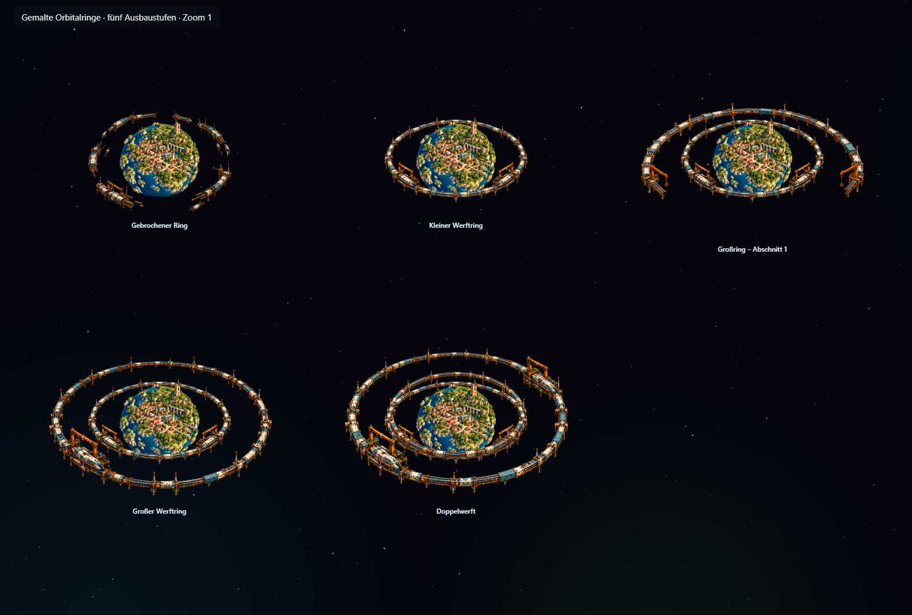
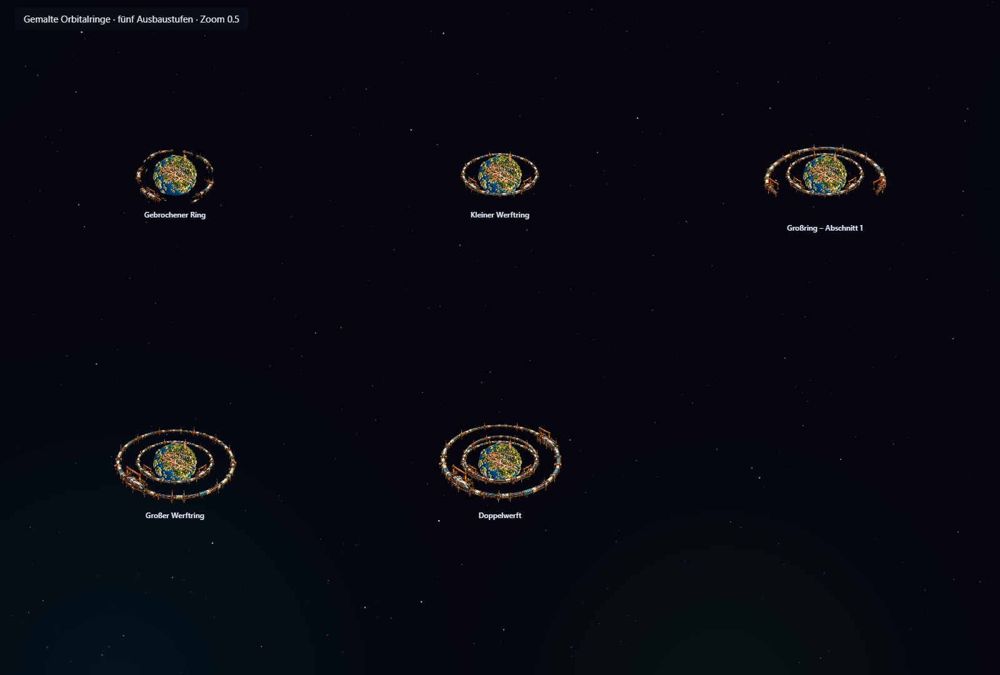
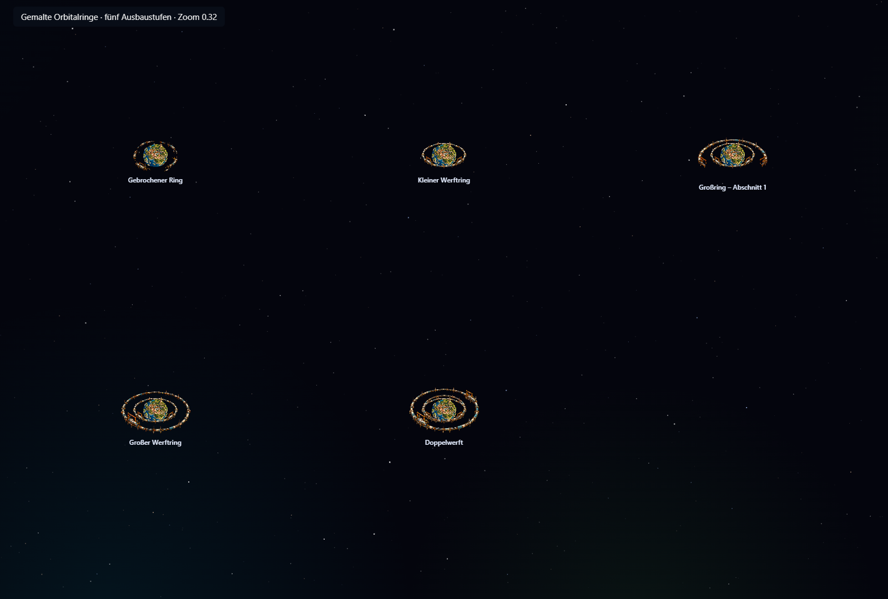
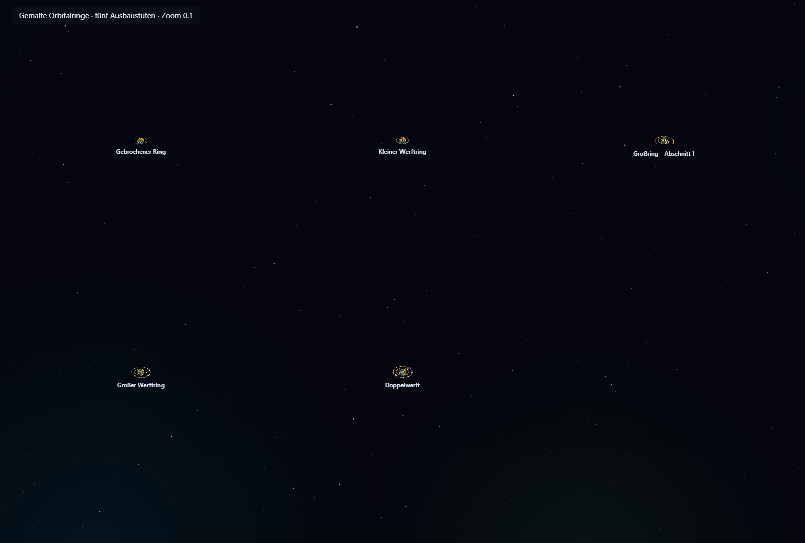
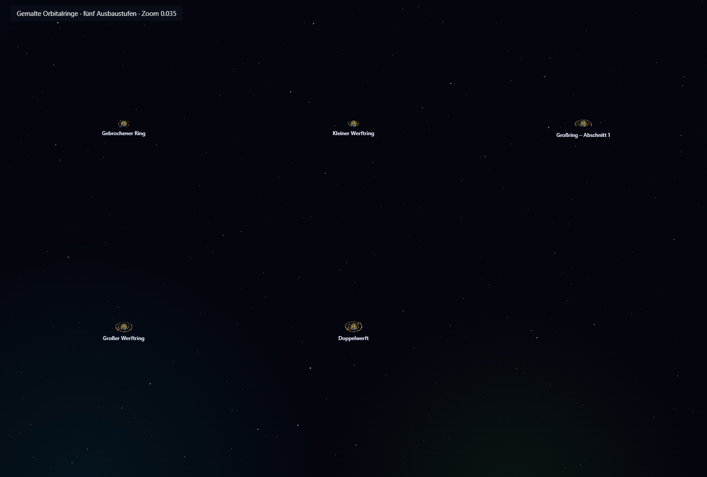
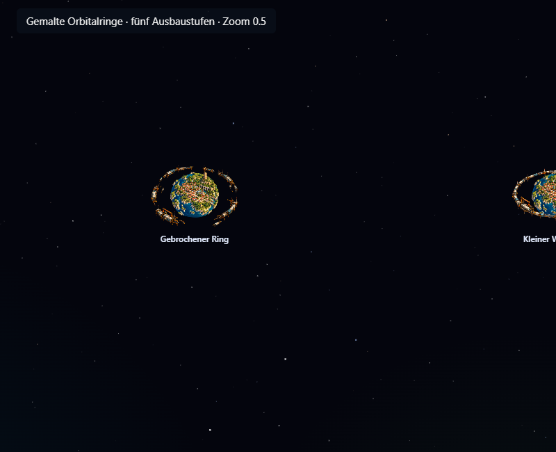
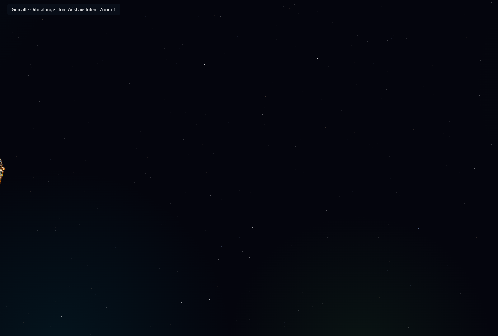

Gemalte Orbitalringe
Umgesetzt nach der freigegebenen zweiten Fassung: schlanke industrielle Träger, freie Abstände zum Planeten und einzelne Werftbuchten. Gebrochener Ring, kleiner Ring, halber Großring, fertiger Großring und Doppelwerft haben eigene Ansichten. Der Innenring bleibt beim Ausbau identisch und die Bodenentwicklung ist unabhängig.
390 Tests bestanden. Browserprüfung: fünf Ringzustände, sechs Bodenstufen, fünf Zoomstufen, transparente Ebenen, Auswahl und größere Sichtgrenzen. Zusätzlich gesamte Grafik-Browserprüfung mit 113 Bildern erfolgreich.
Ring-Prüfergebnisse · Grafik-Gegenprüfung · Testsuite · PRD
Alle fünf Ausbaustufen

Mittlere Entfernung

Systemansicht

Kleine Darstellung

Grenze zur Sektoransicht

Kleines Fenster

Am Bildschirmrand
